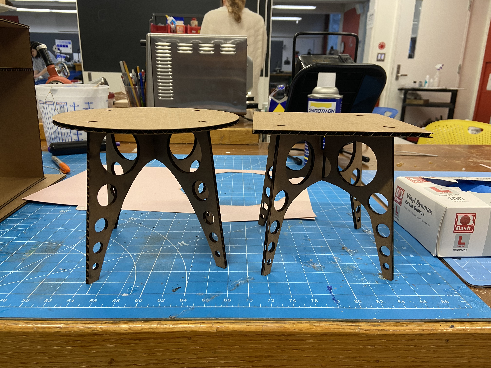
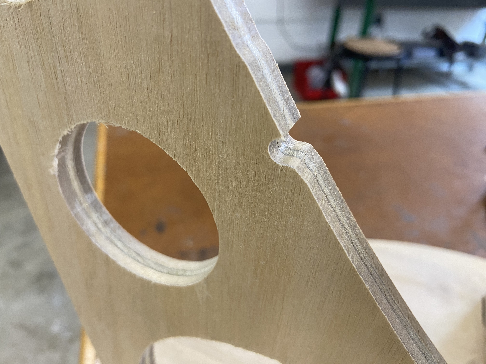
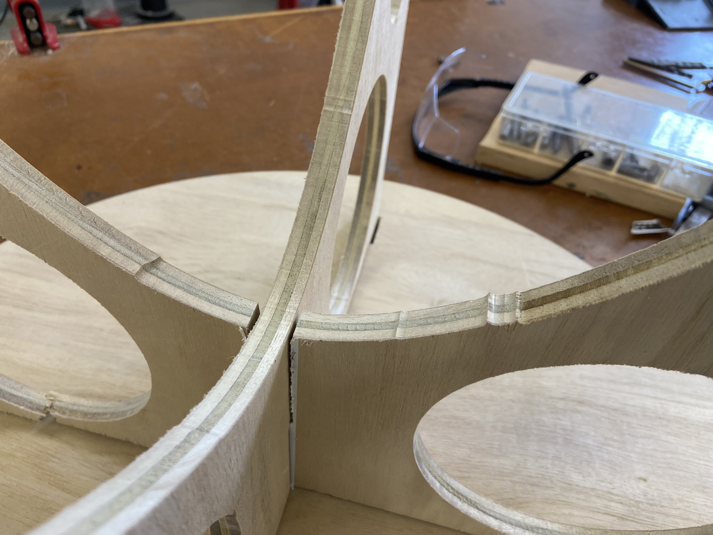
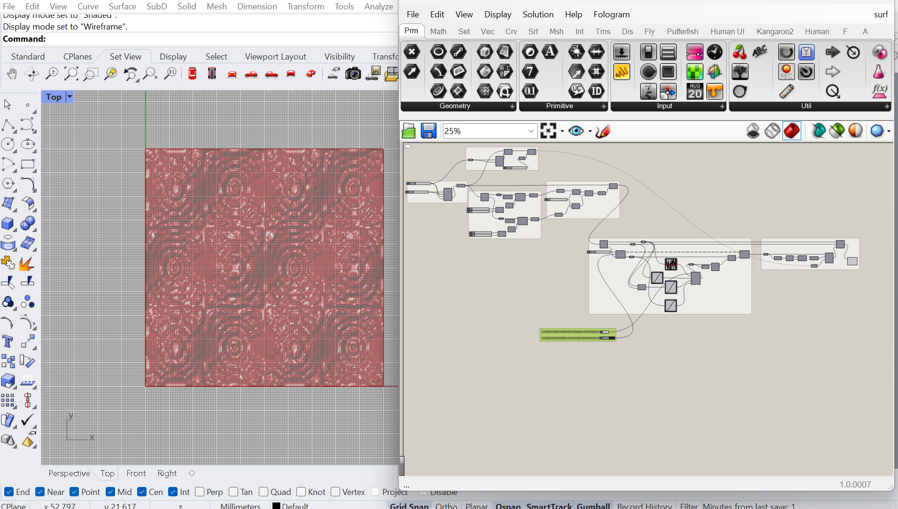
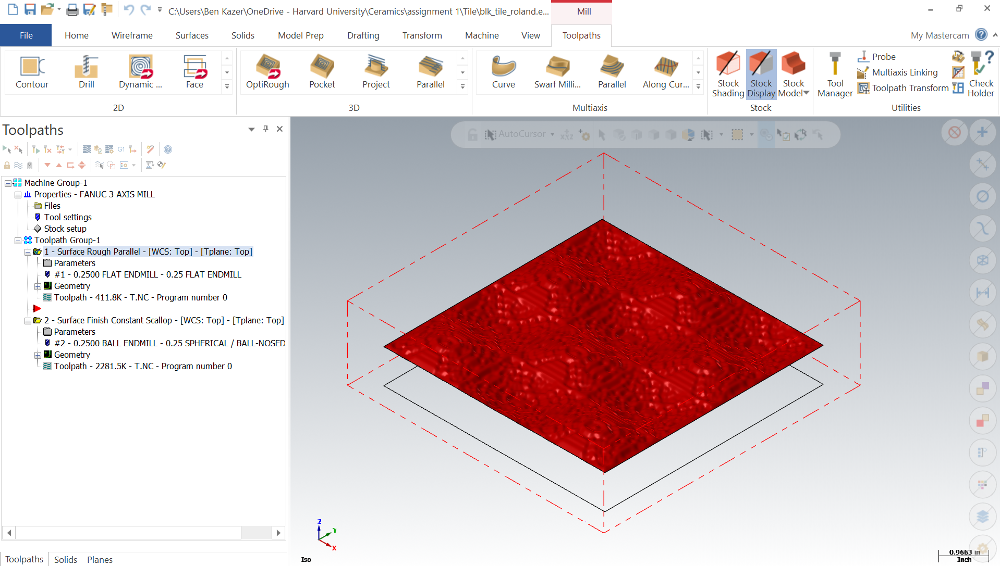
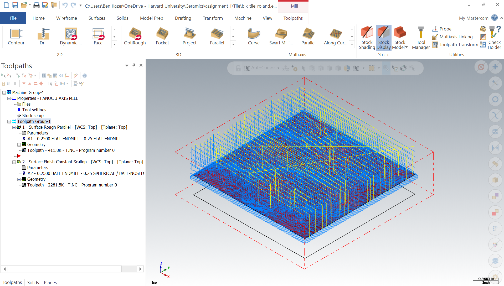
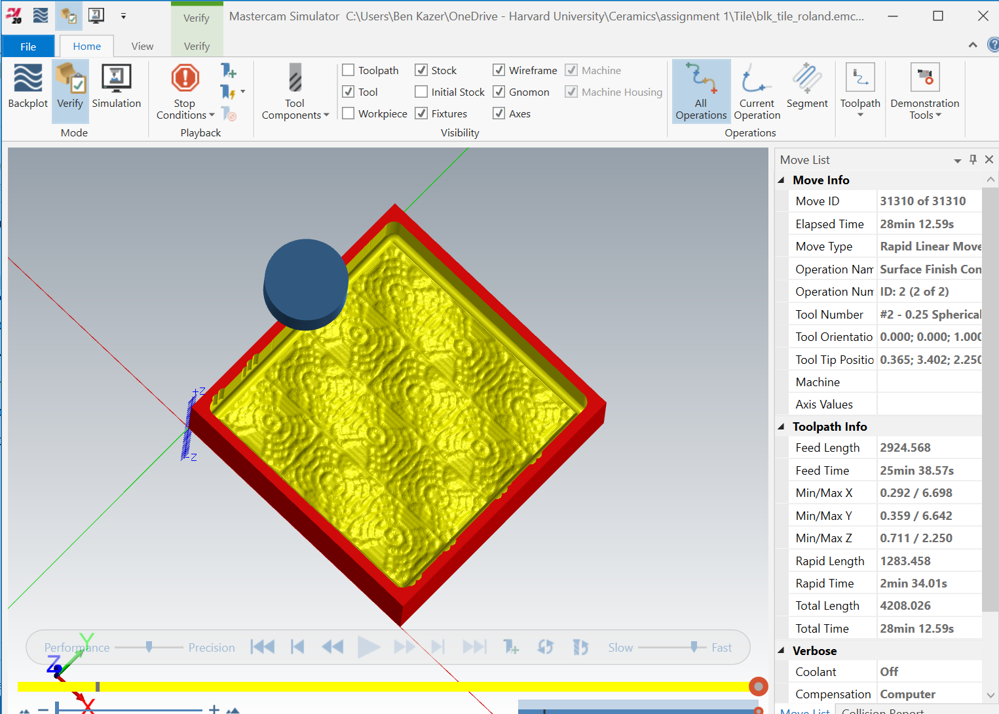
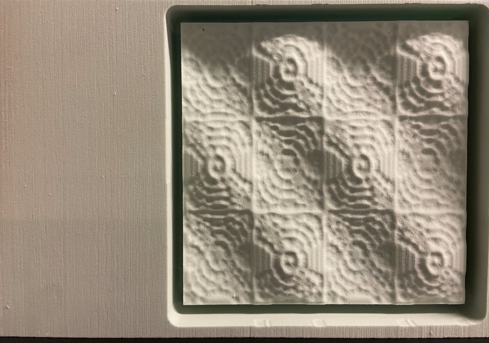
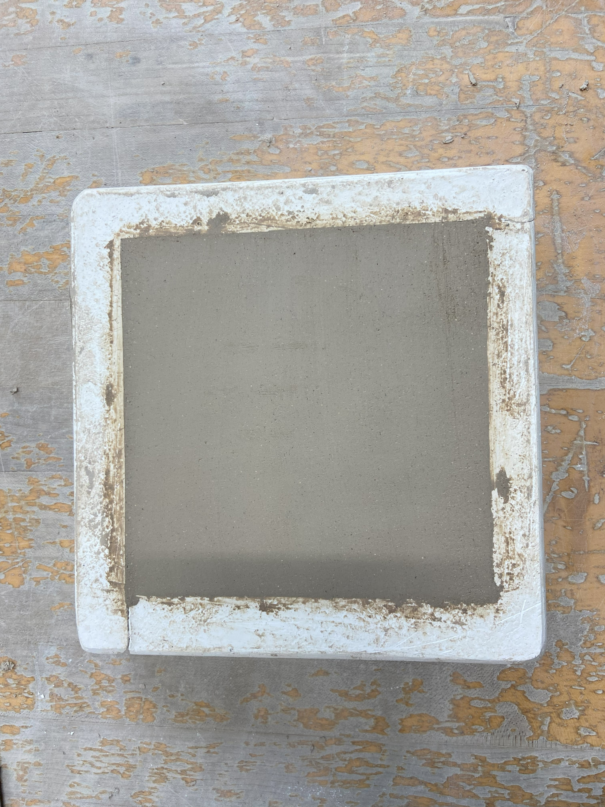
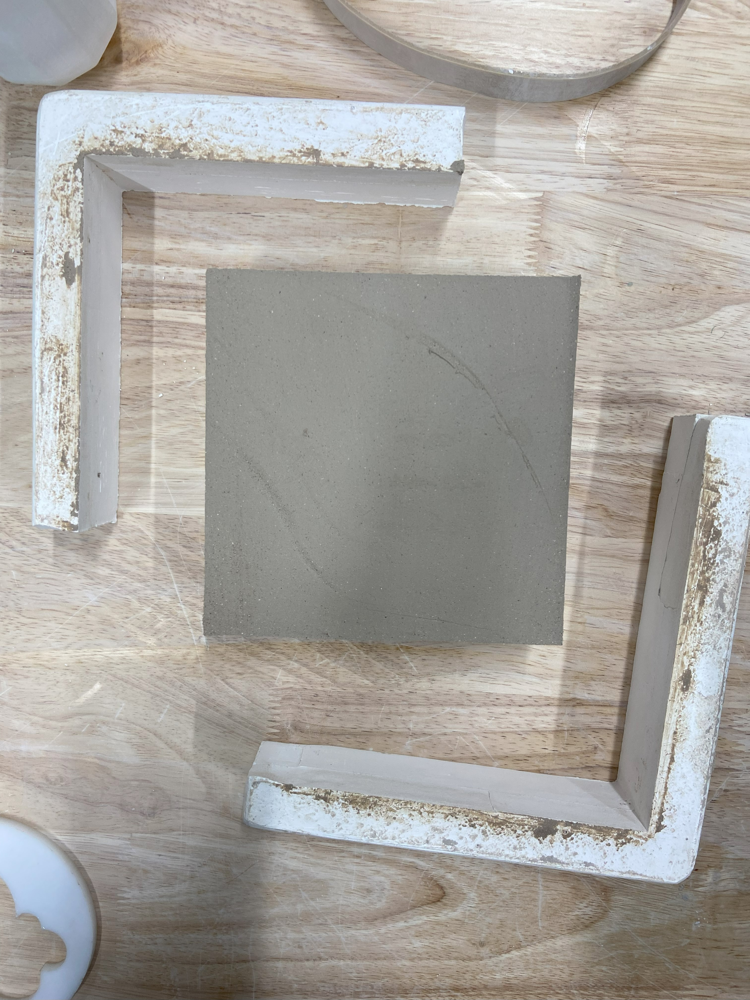

<div class="textcontainer">
<p class="margin"> </p>
<h4>Assignment: Make Something With CNC</h4>
Since CNC is one of the few weekly assignments that affords the opportunity to make something a bit larger,
I wanted to try to make a piece of plywood furniture with 2D cuts. When thinking about this a few weeks ago,
I came up with a basic design for a small side tible inspired by the CNC chairs made by the artist [Tom Sachs](https://tomsachsfurniture.com/products/shop-chair). With 1/2" plywood made available by Nathan, I scaled my original drawings to account for the material thickness. I also made a handful of lasercut cardboard models to test out some of my various design ideas.
<p class="margin"> </p>
<div class="class\">
<img src="Table 3D.png" alt="a 3D model of my planned project"style="width:100%; max-width:300px;">
<img src="Table 2D.png" alt="a 2D drawing of my final design"style="width:100%; max-width:250px;">

</div>
<p class="caption"> 3D & 2D Drawings + Cardboard prototypes of my side table</p>
While all of my table components fit within a 3'x3' sheet of plywood, this was still too big to cut on the lab Shopbot
in one go, so I decided to try the handheld Shaper Origin router instead. The Shaper is essentially a hand held CNC router that uses fiduciary markers in the form of stickers to scan the material, and then projects a 2D drawing on the material from an SVG file uploaded via USB Drive. The user then moves the router along the contours using a guide on the screen of the tool, and the tool performs tiny computer controlled corrections as it moves to cut shapes out exactly as drawn. I was excited to use this tool as I have a fair amount of standard CNC experience from being a FabLab TA at the GSD, but had never heard of the Shaper until Nathan introduced it in class.
<p class="margin"> </p>
Following instructions from the Shaper website, I laid the fiduciary tape out across the board every 4-6", and drove the
router around the board so it could scan and capture the dimensions.
<p class="margin"> </p>
<div class="flexrow">
<img src="shapeO layout.jpg" alt="laying out the ShapeO"style="width:100%; max-width:300px;">
<img src="shapeO scan.jpg" alt="ShapeO scanning material"style="width:100%; max-width:300px;">
</div>
<p class="caption">Laying out the ShapeO tape and scanning the material</p>
I included some test geometry in my drawing to get used to the tool, and definitely experienced a learning curve. It
takes some getting used to the interface and the feel for the movements. Starting with 1/8" endmill, I found that there
was too much friction with the plywood which led to my getting stuck, and the router jerking a little bit out of line.
<p class="margin"> </p>
I switched to a 1/4" endmill which proved much smoother, more efficient, and easier to use. The first few cuts were really exciting and impressive to see how well the tool worked. One thing to note is, as opposed to a normal CNC machine,
the user has to manually decide for each cut whether to cut on the inside, outside, or center of the contour. With many cuts, it's easy to get distracted and make the wrong decision.
<p class="margin"> </p>
<div class="flexrow">
<img src="shapeO progress.jpg" alt="progress on the ShapeO"style="width:100%; max-width:300px;">
</div>
<p class="caption">A test triangle cut with 1/8" inch endmill, and making progress with the table leg cutouts
after switching to 1/4"</p>
Things were going great up until this point, when the tool started to get really confused about all the cut outs and
missing tape. At seemingly random points, the tool would refuse to engage, or worse, jerk out of line, and caused some
unfortunate errors in the cutting. I spent hours trying to remedy this, and ended up giving myself quite a physical workout
running aruond the board and pushing the router around. Towards the end, the Shaper wouldn't even let me finish the final cutout for one of the legs and I had to finish the cut on the bandsaw.
<p class="margin"> </p>
I had been planning to sand and paint this piece, but given the mistakes, especially one big one that caused some structural instability, I decided it wasn't worth the effort to go through the post processing
<p class="margin"> </p>
<div class="flexrow">


</div>
<p class="caption">Some unfortunate mistakes</p>
Even so, the cut pieces fit together and still look pretty cool. I decided to donate this version to the lab for show and tell and have an appointment this week to cut a new version on the big GSD CNC router which will hopefully be more successful ;)
<p class="margin"> </p>
<div class="flexrow">
<img src="table final.jpg" alt="final table"style="width:100%; max-width:400px;">
</div>
<p class="caption">The final cutout assembled</p>
My suggestions for anyone else interested in this tool would be to 1. Layout a bigger-than-you-think margin of tape on all sides of the projected geometry and 2. Avoid making many cuts on the same piece of material to keep the machine from getting confused.
<p class="margin"> </p>
<h4>Conveniently, however</h4>
I had a parallel oppurtinity for CNC'ing something much smaller and more detailed. I am taking another class this semester on "Digital Ceramics," or using digital fabrication techniques to make obects out of clay. Our first assignemt was all about mold making, and although my team had already finished our core requirement of slip-casting from a 3D printed pattern, I decided to make a CNC'd mold as a bonus since it was CNC week in the PS70 lab. My goal was to create a tile with a complex texture that could really only be created digitally or computationally.
<p class="margin"> </p>
Following an awesome [tutorial](https://www.youtube.com/watch?v=CJXNhaesqXA), I created a cool looking 6x6" surface in Grasshopper using the Anemone plugin which allows for executing recursive geometric operations.
<p class="margin"> </p>
<div class="flexrow">

</div>
<p class="caption">Grasshopper script and resulting tile that I planned to CNC</p>
I then imported the geometry into MasterCam, the CAM software used for the GSD equipment, generated the tool paths (a roughing and a surface finish), and simulated the result.
<p class="margin"> </p>
<div class="flexrow">



</div>
<p class="caption">MasterCam toolpaths and simulation before cutting</p>
I cut this file on the GSD Roland CNC mill, since it allows for smaller, higher resolution jobs, using a 1/8" endmill for the detailed surface finish. I was lucky to find scrap medium density foam for the job. It came out great.
<p class="margin"> </p>
<div class="flexrow">
<img src="cnc.gif" alt="cutting the tile"style="width:100%; max-width:300px;">

</div>
<p class="caption">Milling the tile and the finished result</p>
I then brought the milled piece to the Harvard Ceramic Studio in Allston where I have studio space for my other class,
and with the help of the staff there cast a plaster negative of my foam piece. I used cottle boards to do this, and made a 3 part mold with a 6x6" piece for the finish, and 1.5" removable borders that would make it easy to release the clay, eventually.
<p class="margin"> </p>
<div class="flexrow">
<img src="plaster cast.jpg" alt="casting plaster"style="width:100%; max-width:300px;">
<img src="plaster done.jpg" alt="plaster done"style="width:100%; max-width:300px;">
</div>
<p class="caption">Casting plaster and the impressive resolution on the finished mold</p>
After the plaster dried, I banded the 3 part mold together and packed it with T1 sculpture clay, which has a nice grit to it. Once the clay dried, I dissembled the mold and released the final result. The texture transferred really nicely from the foam, to the plaster, to the clay.
<p class="margin"> </p>
<div class="flexrow">


<img src="clay final.jpg" alt="plaster done"style="width:100%; max-width:300px;">
</div>
<p class="caption">Press molding the clay and revealing the final result</p>
Phew! That's all for this week. Can't wait to see how both the new table and the fired/glazed tile turnout!
</div>